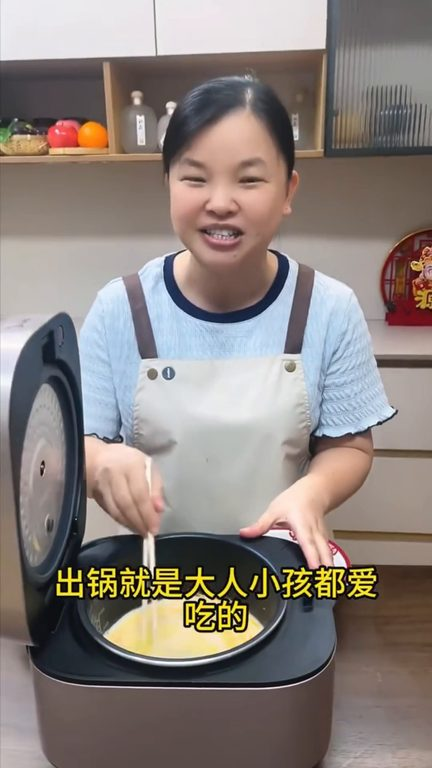
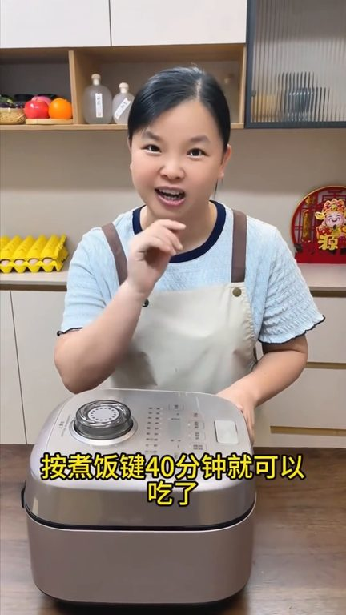
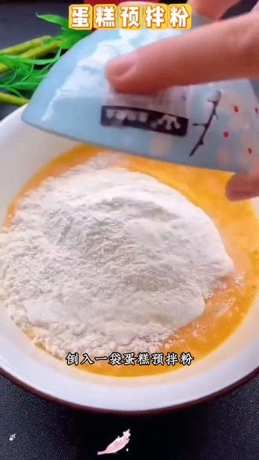
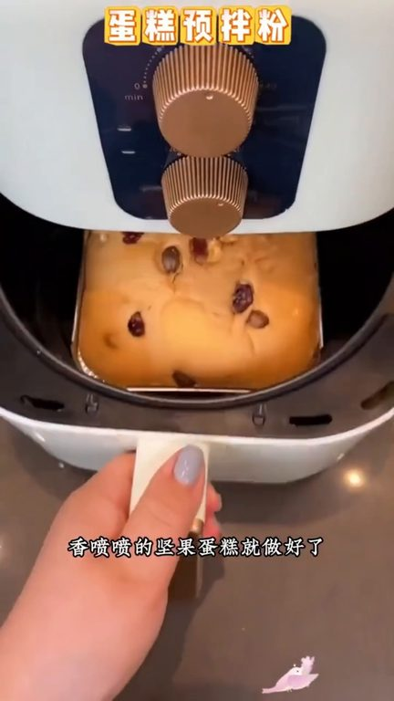

TOP 1 · 代表素材深度拆解
核心放量 稳健
视频为原始素材 HTTPS 链接；点击后加载，建议在网络环境良好时播放。
26.9万素材消耗
2.62%CTR
66.0%类目消耗占比
+0.49pp较类目均值
表现判断
该素材是类目内第 1 名，属于“核心放量”；CTR 高于类目均值。消耗体现承接规模，CTR 体现首屏与定向效率，两项应结合判断，不能仅以单指标下结论。
表达标签
口播三段式证据
开场钩子大家注意看把牛奶和鸡蛋倒入电饭包里我们用筷子顺着一个方向搅拌均匀出锅就是大人小孩都爱吃的松软香甜的淀粉包蛋糕了很多人都想在家里做蛋糕但是总觉得特别麻烦
中段论证蛋糕会更加细腻口感会更加好的盖上盖子按煮饭键40分钟就可以吃了走我们去喝杯茶慢慢等吧姐妹们时间到了我们一起来看一下哇真的是QQ弹弹非常非常的松软接下来我们来看一下把它倒出来看一看你看真的是QQ弹弹还当当生的现在我们拿把刀来把它切开来看看见证这个蛋糕的时刻哇你看看真的是非常非常的松软细腻我老婆的三个儿子特别喜欢吃蛋糕但是我从来不出去买自己在家做的简单又好吃鸡蛋…
结尾转化都爱吃的坚果蛋糕简单的在家油饺就能做只需要三个鸡蛋一包纯牛奶和一包蛋糕玉拌粉这个蛋糕粉都是调皮好的别的什么都不用加了用筷子搅成这样粘稠一点的面糊上面撒上一层坚果空气炸锅150度烤30分钟香蓝莓的坚果蛋糕就做好了自己在家做呀也是蓬松又轩软的奶酱的蛋糕比上次过推热的坚果真的太好吃了味道一点也不是外面的
有效点
- CTR 2.62% 高于类目均值 2.12%，开场或人群指向具备点击优势
- 包含使用或实测表达，能够把抽象卖点转化为可感知证据
迭代动作
- 保留当前高效钩子，复制 3 个变量版本：人物、首句和首帧分别单变量测试
- 视频时长偏长，建议剪出 30–45 秒短版，仅保留钩子、两项证据和一次 CTA
- 复核功效、绝对化及价格稀缺措辞；增加适用边界和效果因人而异提示
合规关注

钩子建立 · 8.1s

场景/问题展开 · 61.5s

卖点证据 · 141.5s

转化收口 · 194.8s
查看完整口播摘要
大家注意看把牛奶和鸡蛋倒入电饭包里我们用筷子顺着一个方向搅拌均匀出锅就是大人小孩都爱吃的松软香甜的淀粉包蛋糕了很多人都想在家里做蛋糕但是总觉得特别麻烦出去外面买又不健康看到包装戴上秘密麻麻的质都是科技与很活其实自己在家做蛋糕非常简单只有简单的三步刚才我们是用了6个鸡蛋和80毫升的牛奶什么牌子的牛奶都没关系的只要是纯牛奶就可以了但是一定要记住蛋筋蛋黄是不需要分离的将它们搅拌到我现在这个样子就差不多了接下来我们倒入一包蛋糕粉将它继续搅拌均匀搅拌到像我现在这样的酸奶糊状就可以了最后再加入一点点食用油这样吃起来蛋糕会更加细腻口感会更加好的盖上盖子按煮饭键40分钟就可以吃了走我们去喝杯茶慢慢等吧姐妹们时间到了我们一起来看一下哇真的是QQ弹弹非常非常的松软接下来我们来看一下把它倒出来看一看你看真的是QQ弹弹还当当生的现在我们拿把刀来把它切开来看看见证这个蛋糕的时刻哇你看看真的是非常非常的松软细腻我老婆的三个儿子特别喜欢吃蛋糕但是我从来不出去买自己在家做的简单又好吃鸡蛋你不要总是炒着吃或者举着吃今天用我这个简单的方法做好吃的电饭饱蛋糕一袋蛋糕粉8颗鸡蛋不用加糖不用加水再加用电饭锅就可以做出这样松软又好吃的蛋糕我想说蛋糕我妈让我自己做一袋蛋糕粉8颗鸡蛋不用加水不用放糖不用大量轻和蛋黄分离时间到了咱们来看一下真的是服了我妈今天才告诉我这个做蛋糕神器自从有了她女儿再也不炒着去外面买蛋糕吃了电饭包蛋糕兰莓蛋糕坚果蛋糕都能做这个蛋糕粉都是五星级烘焙师调配好的一袋能做好几个蛋糕做法也简单碗中打六个�蛋然后打散倒入一袋蛋糕玉拌粉搅拌均匀有条件的来点清水搅拌至白色奶油状锅中刷油方便脱模倒入调好的面糊盖上盖子按住饭键即可做出来的蛋糕松软香甜奶香浓郁全家都爱吃家里有空气炸锅的一定要试试这个太好吃了碗里先挤一袋牛奶再打入两个鸡蛋然后来拌爆的蛋糕玉拌粉搅拌均匀就行了蛋糕粉里有糖糖也别再加了然后再表面撒上一层蓝莓再用筷子压下去几颗蓝莓松软空气炸锅150度烤25分钟再将蓝莓蛋糕就做好了蓬松又轩软的还夹着酸甜可口的蓝莓今天做一个我们全家人都爱吃的坚果蛋糕简单的在家油饺就能做只需要三个鸡蛋一包纯牛奶和一包蛋糕玉拌粉这个蛋糕粉都是调皮好的别的什么都不用加了用筷子搅成这样粘稠一点的面糊上面撒上一层坚果空气炸锅150度烤30分钟香蓝莓的坚果蛋糕就做好了自己在家做呀也是蓬松又轩软的奶酱的蛋糕比上次过推热的坚果真的太好吃了味道一点也不是外面的